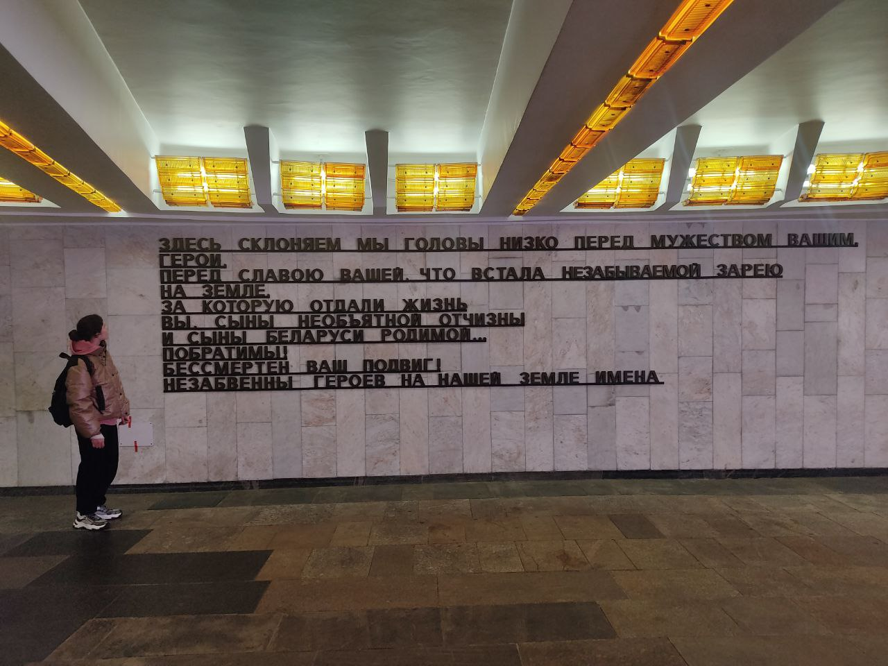

Площадь Победы
Площадь Победы — одно из самых узнаваемых и значимых мест в центре Минска, символ памяти о подвиге белорусского народа в годы Великой Отечественной войны. Она расположена на проспекте Независимости, вблизи набережной Свислочи, и служит не только архитектурной доминантой, но и важным мемориальным пространством.
История площади уходит корнями в довоенное время. До 1958 года она носила название Круглая площадь. Её архитектурное оформление формировалось с конца 1930-х годов и продолжалось в течение десятилетий, включая послевоенные генеральные планы и проект 1950 года. Площадь имеет чёткую геометрию — прямоугольную форму (225 на 175 м), переходящую в полукруг. Пространство делится на две части: аванплощадь и круглая центральная зона, где и возвышается главный памятник.
В центре площади расположен гранитный монумент Победы — величественный обелиск высотой около 40 метров, увенчанный изображением ордена Победы. Он был установлен в 1954 году в честь солдат Красной армии и белорусских партизан, павших в боях за освобождение республики. У основания обелиска находится священный меч Победы, обвитый бронзовой лавровой ветвью, а на постаменте размещены четыре горельефа, раскрывающие тему героизма, сопротивления и освобождения. Ступени обрамлены бронзовыми венками, символизирующими память и скорбь.
3 июля 1961 года, в день 17-й годовщины освобождения Минска, у подножия монумента был торжественно зажжён вечный огонь. Это сделал Герой Советского Союза, генерал-полковник Александр Бурдейный, ставший первым почётным гражданином города.
Позже, к 40-летию Победы, 8 мая 1985 года, под площадью был открыт Мемориальный зал, посвящённый Героям Советского Союза, отдавшим жизни за свободу Беларуси. Он находится внутри подземного перехода и стал неотъемлемой частью комплекса памяти.
Площадь Победы сегодня — это не только историко-культурное пространство, но и место, где проходят торжественные церемонии, парады, минуты молчания. Здесь сочетаются торжественность и тишина, монументальность и живая городская динамика — ведь под площадью проходит Московская линия Минского метрополитена, связывающая прошлое и настоящее.
Пройди тест для закрепления результата.
Тест